Projects
Not everything can be contained within a 400x300 dribbble shot, that's why this page exists. Below are some hand-picked projects I've done over the past couple of years. Take a look around and drop me a line if you like something here.
-

bananastand.me
2012 • Web Design
This was a quick weekend project that I've been wanting to build for a while now. I've found a few quote generators online, but felt that none of them did my favorite show justice. If there's a quote that you want to see in the generator that not's already there, send me an email.
-
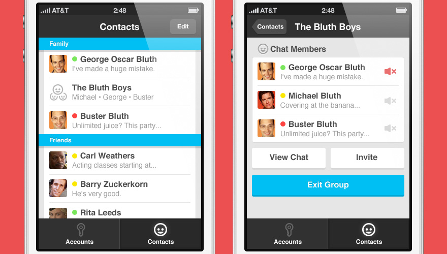
iOS Chat Application
2012 • Product & User Interface Design
Did this one for fun and really happy with the way it turned out. What started out as a lazy night watching arrested development, turned into a spontaneous four hour photoshop session.
-
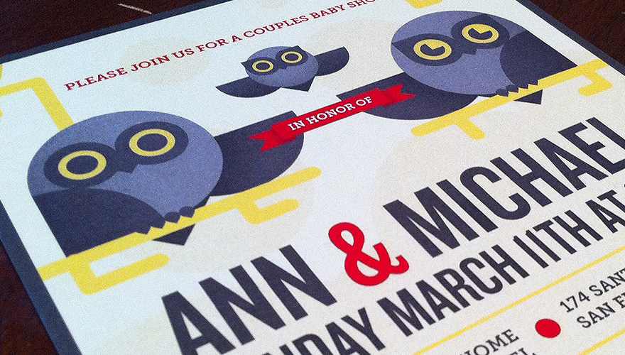
Owlvitation
2012 • Print Design & Illustration
Fun side project for a couple that's crazy about owls. I don't get to do much illustration these days, so I usually make an extra effort with projects like these.
-
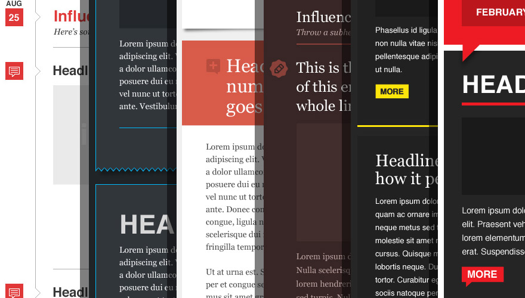
FanBridge Email Templates
2012 • Template Design
Created a set of nearly 30 different email themes over the course of three months to offer a product on par with that of mailchimp and campaign monitor. Had an awesome development team behind me to get these working.
-
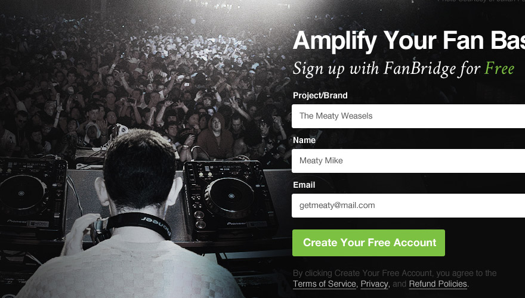
FanBridge DJ Landing Page
2012 • Web Design
Another small web design project for FanBridge. This landing page is part of a concentrated effort to increase sign-ups by targeting a specific niche.
-
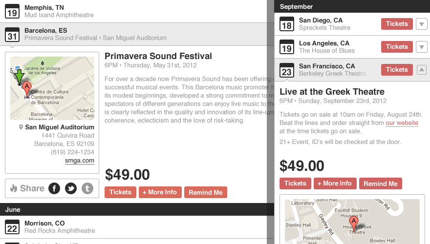
FanBridge Events Widget
2012 • Product & User Interface Design
This is an embeddable events widget that I designed for FanBridge. Users are able to import event information through songkick or enter events manually. Once events are entered into the widget, the user can assign a custom width, select a light/dark theme and select a highlight color for the widget.
-
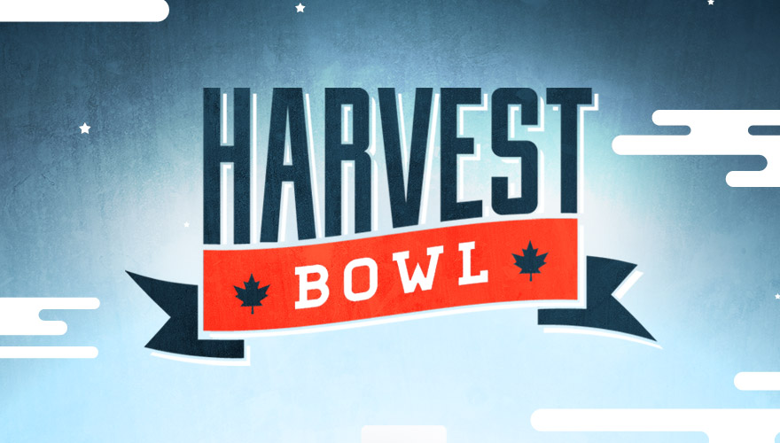
Harvest Bowl Festival
2011 • Identity, Logo & Print Design
Harvest Bowl was a CMJ showcase put on by FanBridge at Brooklyn Bowl in New York. I had a lot of fun with this project and was happy with the way the textures came out in this piece.
-
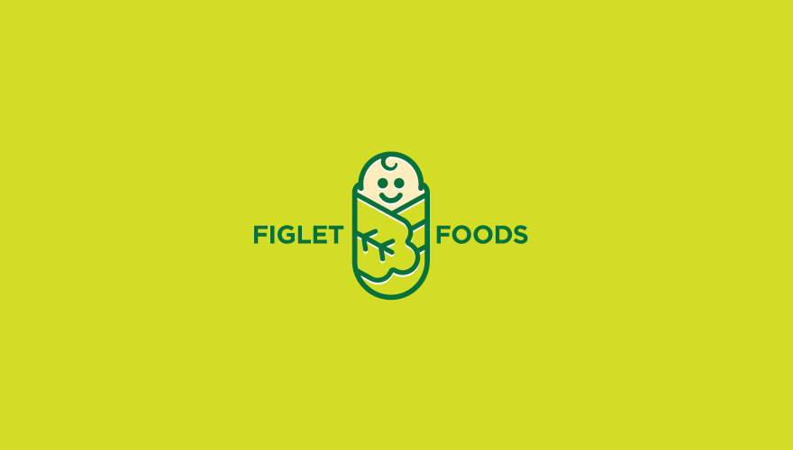
Figlet Foods Logo
2012 • Identity & Logo Design
Small project for an up and coming baby food company.
-
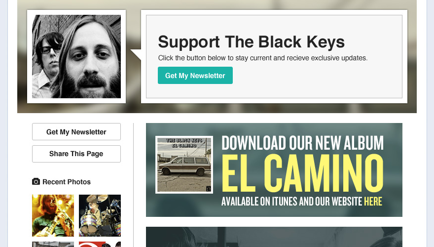
Facebook Fanpage Application
2012 • Product & User Interface Design
Facebook application that helps FanBridge users promote their brand through social media. The application gives the user a central hub where they can pick and choose custom "modules" to display, tailored to their needs.
-
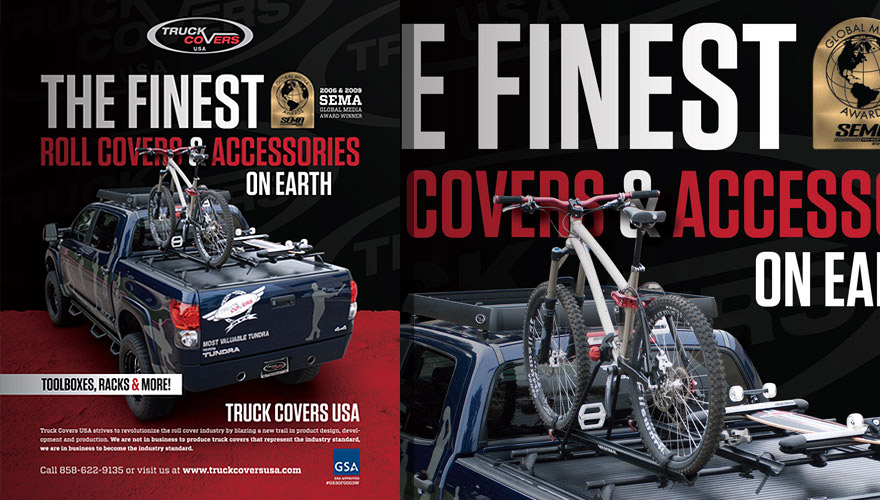
Trucks Covers USA Redesign
2011 • Print Design
An ongoing branding project I've been working on since early 2011. Starting out with a simple brochure redesign, this project has turned into a massive aesthetic overhaul of the company's current print material.
-
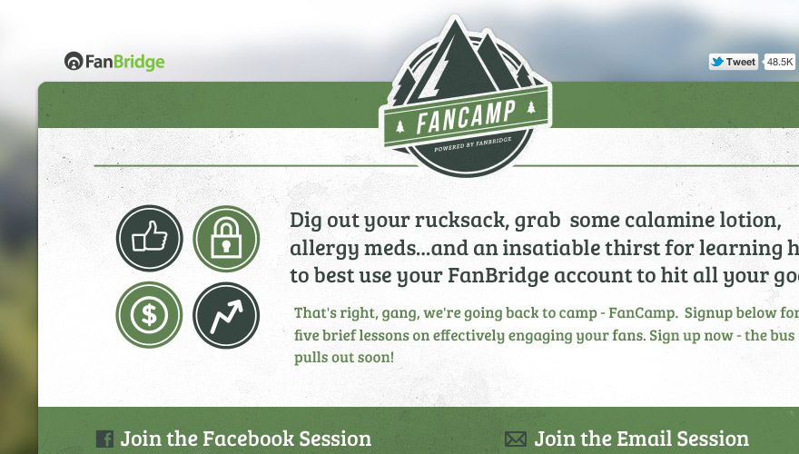
FanCamp Microsite
2012 • Branding & Web Design
Small web design project for FanBridge. This one was fun because I was asked to come up with both the branding and design of the site from scratch
-
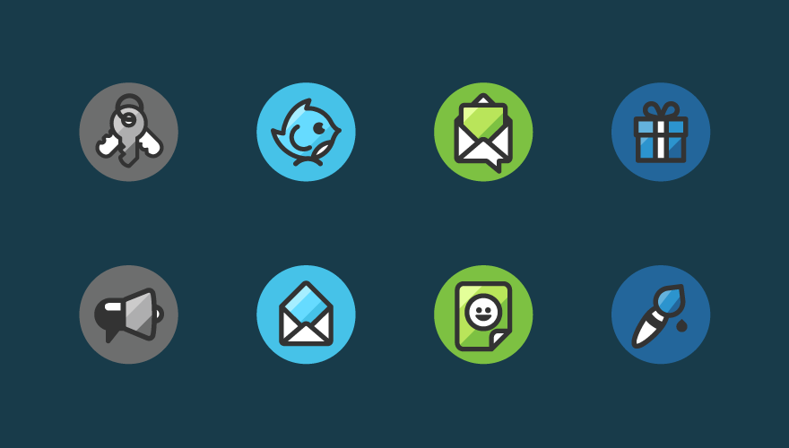
FanBridge Icons
2011 • Icon Design & Illustration
Easily one of my favorite projects. This started out as a set of only 3 icons but turned into something much larger, very quickly. With the different color variations I produced, this set broke the 100 artboard limit in Illustrator.
-
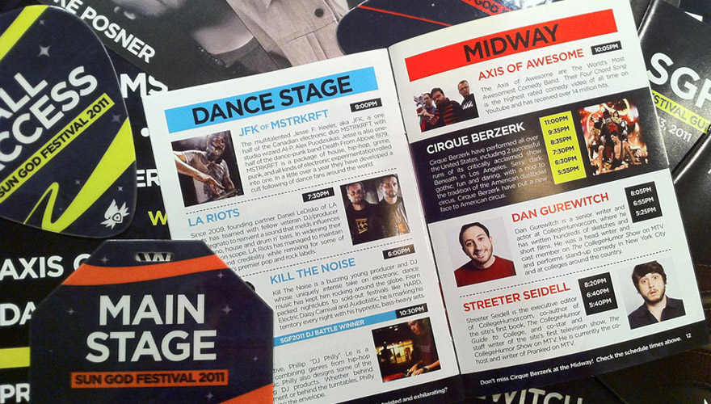
Sun God Festival 2011
2011 • Branding, Print & Web Design
Annual music festival that takes place at UC San Diego. As lead designer on this project, I was responsible for the branding and production of promotional materials for the event.
-
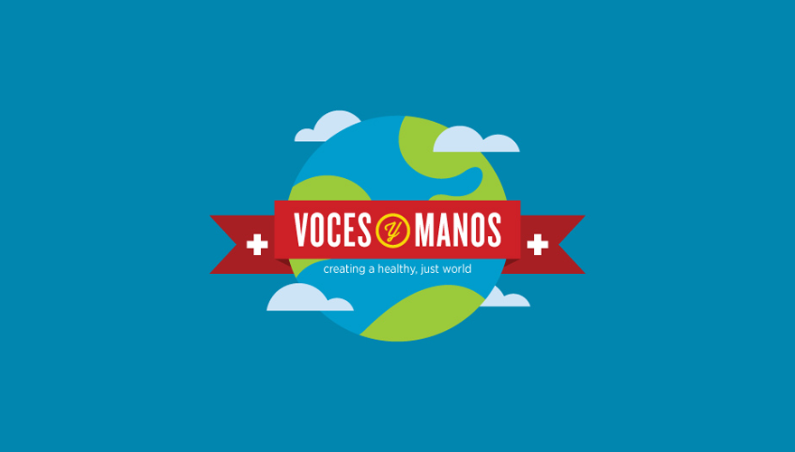
Voces y Manos Identity
2011 • Identity & Logo Design
Identity work for an organization called "Voces y Manos por el Derecho a la Salud".